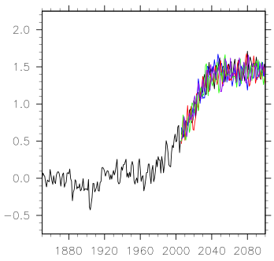

CESM Simulations to study climate under 1.5°C and 2.0°C targets
As a result of the COP-21 agreement, there is considerable interest in the scientific community to provide input on the projected climate impacts under a climate warming scenario that stabilizes at 1.5°C. As discussed in Mitchell et al. (2016), there is a current dearth of such simulations available to the climate impact community and little time available since the IPCC Special Report on 1.5°C target is expected to be delivered in Autumn 2018. To be assessed under IPCC rules, research papers must be submitted for peer review prior to the finalization of the Second Order Draft (tentatively scheduled for Jan 2018) and accepted for publication before the Final Government Distribution draft is finalized (tentatively scheduled for June 2018). We are currently running the CESM Large Ensemble (LENS; Kay et al., 2015) model version to produce a 10-member ensemble, using a scenario based on the recently published paper by Sanderson et al. (2016). The simulations are using CESM1 at 1-degree resolution and are therefore identical to the LENS, except for their greenhouse gas specified concentrations; output is identical to the LENS. We are also performing two additional ensembles with 1) a target of 2°C and 2) an overshoot scenario that temporarily exceeds 1.5°C, as it will be critical to identify if there will be impacts sensitive to this fairly limited range of global surface temperature outcomes.
|  | Figure caption: Global annual mean surface temperature (in K), referenced to the average over 1850-1879. Each colored line represents a 1.5°C ensemble member. |
Results from the simulations are available on the Earth System Grid (https://www.earthsystemgrid.org/dataset/ucar.cgd.ccsm4.lowwarming.html). We have performed all planned simulations, i.e. 11 ensemble members for the 1.5°C and 2°C targets, each and 6 for the overshoot scenario. This includes one ensemble member with extended output, including high-frequency for regional downscaling.
All simulations within one ensemble only differ by perturbation in their atmosphere initial state, following the LENS procedure (http://www.cesm.ucar.edu/projects/community-projects/LENS/). The three-digit identifier (001-010) indicates the LENS ensemble member from which the simulation was initialized. Note that the model output uses the CESM standard naming convention for timeseries data. More specifically, each file name contains the time range of the data in the file.
A publication (Sanderson et al., 2017) to document those simulations is currently under review in Earth System Dynamics (http://www.earth-syst-dynam-discuss.net/esd-2017-42/) and we are hoping that all publications using the data above will reference it. Please contact Ben directly (bsander@ucar.edu) for more informations.
References
Kay, J. E., C. Deser, A. Phillips, A. Mai, C. Hannay, G. Strand, J. Arblaster, S. Bates, G. Danabasoglu, J. Edwards, M. Holland, P. Kushner, J.-F. Lamarque, D. Lawrence, K. Lindsay, A. Middleton, E. Munoz, R. Neale, K. Oleson, L. Polvani, M. Vertenstein. The Community Earth System Model (CESM) Large Ensemble Project: A Community Resource for Studying Climate Change in the Presence of Internal Climate Variability. Bull. Amer. Meteor. Soc., 96, 1333–1349, doi: http://dx.doi.org/10.1175/BAMS-D-13-00255.1, 2015.
Mitchell, D., R. James, P. M. Forster, R. A. Betts, H. Shiogama, and M. Allen, Realizing the impacts of a 1.5°C warmer world, Nature Climate Change, 2016.
Sanderson, B., B. O'Neill, and C. Tebaldi, What would it take to achieve the Paris temperature targets? Geophys. Res. Lett., DOI: 10.1002/2016GL069563, 2016.
Sanderson, B. M., Xu, Y., Tebaldi, C., Wehner, M., O'Neill, B., Jahn, A., Pendergrass, A. G., Lehner, F., Strand, W. G., Lin, L., Knutti, R., and Lamarque, J. F.: Community Climate Simulations to assess avoided impacts in 1.5 °C and 2 °C futures, Earth Syst. Dynam. Discuss., doi:10.5194/esd-2017-42, in review, 2017.
Sanderson, B. M., Xu, Y., Tebaldi, C., Wehner, M., O'Neill, B., Jahn, A., Pendergrass, A. G., Lehner, F., Strand, W. G., Lin, L., Knutti, R., and Lamarque, J. F.: Community Climate Simulations to assess avoided impacts in 1.5 °C and 2 °C futures, Earth Syst. Dynam. Discuss., doi:10.5194/esd-2017-42, in review, 2017.